An estimated 1.5 million college students travel annually both nationally and internationally for spring break.
Home
Where To Go
Make Travel Affordable
Risks & Recommendtions
Before You Go
7 out of top 10 hot spots for spring break are international locales including Mexico, Dominican Republic and Jamaica. View all 10 locations here.

Use the tools above to save on gas on your road trip this spring break.
If you are staying at a hotel check the front desk of your hotel for brochures and flyers from local businesses to find coupons and special offers.
Be willing to consider being bumped to save money on your flight.
Adjust your privacy settings and use your best judgment when checking in on Facebook and Foursquare. Be cautious about revealing personal information and location through status updates or tweets with Twitter trends such as #SpringBreak and #SB2013.
Limit the number of people who can contact you.
Limit the amount of personal info you post and only allow friends to see it.
Jellyfish stings: if you get a jellyfish sting, don't rub it. That'll only make it worse. Wash the wound with rubbing alcohol. Put some meat tenderizer on it, or go to a walk-in clinic.
Watch out for rip currents. They're narrow sections of current too strong to swim against and will take you quickly offshore. Swim parallel to shore until you are out of the rip current, then swim toward the beach. Or drown.
Where there’s thunder, there’s lightning. Get out of the water.
Don’t get burned. Look for the words “broad spectrum” and “water-resistant” or “waterproof” on the sunscreen you buy. Apply liberally 15 to 30 minutes before going outdoors. Reapply every two hours.
Keep your cool. To avoid sunstroke, wear loose, light-colored clothes. Drink plenty of fluids. Avoid alcohol. Go easy on the exercise/physical activity.
Watch your drinks and your person and personal belongings. In some areas, tourists are targeted because they’re unfamiliar with the area.
Travel in groups. Don't let your friends wander off with strangers. Just because it's spring break doesn't mean the predators take the week off.
Never go anywhere alone. Have a code word to use with friends in case you feel uncomfortable in a situation. Check in regularly with one another.
Avoid theft. Leave expensive electronics and bling at home. Keep an eye on your purse/backpack/beach bag at all times. Book a room in a hotel that has a safe. Place values in the safe when you leave your room.
Update vaccines before you go on vacation in a foreign country before you go on vacation.
Make sure your insurance is up to date, and purchase temporary health insurance for travel out of the country.
Keep any medications in their original containers to prevent difficulty in Customs.
Get a copy of all of your prescriptions from your physicians in case you lose your medications or customs questions the bottles’ contents.
Check the State Department for travel warnings before selection your destination. Some popular spring break destinations may be considered high risk for travel.
Check the local weather forecast before you go and while there to pack appropriately.

Find out what natural disasters are likely in that area. Know how to respond.

Keep a copy of your passport separate from your passport in the event of it being lost or stolen.
Fill out the emergency contact information in your passport.
Before leaving the country, enroll in the U.S. Department of State’s Smart Traveler Enrollment Program (STEP). The government will be better able to assist you if you lose your passport.
Locate the nearest U.S. Consular office in your destination country, which assists Americans with legal, medical or financial difficulties when they’re outside the United States.